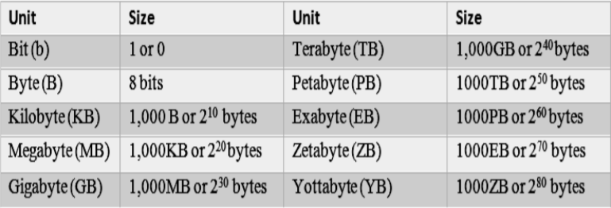

Volume refers to data volume. Data volume is the size of digital data. Internet and social media effect have resulted in the explosion of digital data. Data has grown from Gigabytes to Terabytes to Petabytes to Exabytes. Total data on the internet was 8 Exabytes as of 2008, and by 2011, it has exploded to 150 Exabytes. It is growing at such a fast pace that it reached 670 Exabytes in 2013. That is like 30% growth per year! In another ten years, it is supposed to exceed seven Zettabytes. How can one store and handle this much data? There are so many new terms to describe the size of data. Now, let us understand the various terms used to for different data sizes.
This table shows the various sizes used for big data. We all know Kilobyte, Megabyte, and Gigabyte. A Terabyte consists of 1000 Gigabytes, and one Petabyte is about 1000 Terabytes. New terms such as Exabyte, Zettabyte, and Yottabyte have been added to address big data sizes. When we say big data, we normally mean sizes in terms of terabytes or more.
The velocity of data refers to the speed of data ingestion or data growth. There are millions of web pages being added every day. Data gets created from different sources such as desktops, laptops, mobiles, tablets, and sensors. Manufacturing facilities have thousands of sensors that generate sensor data every few seconds. People use one or the other devices to create data on 24/7 basis. We might think that the data external to an organization like on the internet is growing but the data created internally by the organization is also growing at a faster rate. This is due to the increase in the global customer base of organizations and also due to increased transactions and interactions with the customers. There are many contributors to this data growth: web and social media, online billing systems, ERP implementations, network, and machine data. Growth in revenues of organizations also means that their data is also growing at a rapid pace. Moving on, we will look at the third V of big data.
Data variety refers to the different types of data that is being created. One of the major reasons for that is multimedia and social media effect. So, these days data is not just plain text. It includes images, audio, video, XML, and HTML. There is structured data such as databases and XML and also unstructured data such as program logs, blogs like Wordpress and user comments on Twitter and Facebook. There are many industries such as transport, science, and finance which are adding a variety of data every day. Let us reiterate the 3 Vs of big data: Volume (pause), Velocity (pause) and Variety (pause).